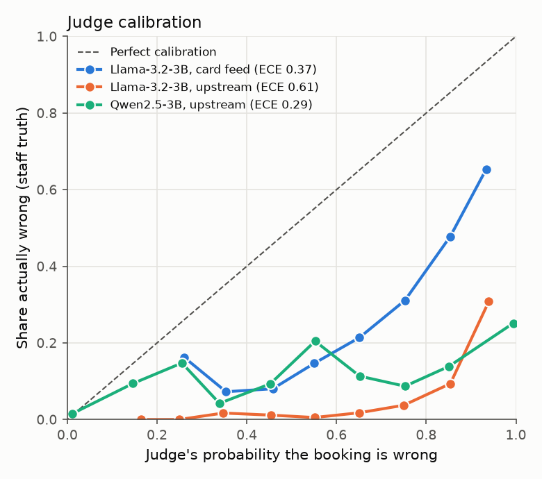
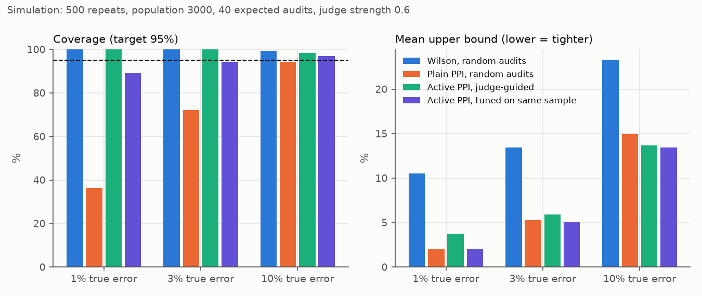
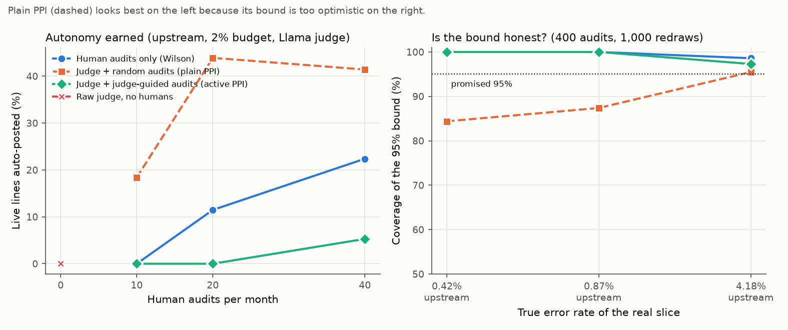

JudgeGate
Can an LLM judge replace the human audits that decide when an AI agent may act on its own? Tested on 14,851 real purchase-card bookings that council finance staff coded by hand, with free local models (no API). Short answer: small local judges rank well but are badly calibrated, the textbook statistical fix gives over-optimistic bounds when errors are rare, and human audits stay the evidence. The judge earns a smaller job: ordering the review queue.
Code and full method on GitHub · every number below is computed from committed model outputs by judgegate analyze.
1 · How good are the judges?
Each judge sees the transaction, the agent's proposed account and similar past bookings, never the staff answer. "False pass" = a wrong booking the judge approved; "false fail" = a correct booking it rejected.
| Judge | Setting | Lines | Agent error | AUC (95% CI) | κ at 0.5 | False pass | False fail | ECE |
|---|---|---|---|---|---|---|---|---|
| Llama-3.2-3B | Card feed | 4,987 | 35.0% | 0.75 (0.74–0.76) | 0.11 | 3.4% | 81.7% | 0.374 |
| Llama-3.2-3B | Upstream | 4,987 | 10.4% | 0.84 (0.82–0.86) | 0.04 | 1.5% | 80.8% | 0.613 |
| Qwen2.5-3B | Upstream | 4,987 | 10.4% | 0.84 (0.83–0.86) | 0.25 | 13.4% | 32.3% | 0.287 |


2 · Does the judge earn autonomy safely?
Every month the gate auto-posts lines above a confidence threshold whose 95% upper bound on error, from earlier months only, fits a 5% budget. Policies differ only in the evidence behind that bound.

| Judge | Setting | Policy | Audits / month | Human labels | Auto-posted (mean ± sd, 20 draws) | Error when auto-posted | Months over budget (mean) | Mis-posted £ |
|---|---|---|---|---|---|---|---|---|
| Llama-3.2-3B | Card feed | Human audits only (Wilson) | 10 | 260 | 0.0% ± 0.0% | – | 0.0/20 | £0 |
| Llama-3.2-3B | Card feed | Human audits only (Wilson) | 20 | 520 | 0.0% ± 0.0% | – | 0.0/20 | £0 |
| Llama-3.2-3B | Card feed | Human audits only (Wilson) | 40 | 1,040 | 0.4% ± 1.6% | 7.55% | 0.3/20 | £41 |
| Llama-3.2-3B | Card feed | Raw judge, no humans | 0 | 0 | 0.0% ± 0.0% | – | 0.0/20 | £0 |
| Llama-3.2-3B | Card feed | Judge + random audits (plain PPI) | 10 | 260 | 3.2% ± 3.4% | 8.02% | 2.1/20 | £424 |
| Llama-3.2-3B | Card feed | Judge + random audits (plain PPI) | 20 | 520 | 2.2% ± 2.8% | 4.52% | 1.6/20 | £162 |
| Llama-3.2-3B | Card feed | Judge + random audits (plain PPI) | 40 | 1,040 | 3.9% ± 4.7% | 5.32% | 2.8/20 | £349 |
| Llama-3.2-3B | Card feed | Judge + judge-guided audits (active PPI) | 10 | 260 | 0.0% ± 0.0% | – | 0.0/20 | £0 |
| Llama-3.2-3B | Card feed | Judge + judge-guided audits (active PPI) | 20 | 514 | 0.0% ± 0.0% | – | 0.0/20 | £0 |
| Llama-3.2-3B | Card feed | Judge + judge-guided audits (active PPI) | 40 | 1,037 | 0.0% ± 0.0% | – | 0.0/20 | £0 |
| Llama-3.2-3B | Upstream | Human audits only (Wilson) | 10 | 260 | 29.6% ± 17.6% | 0.68% | 0.0/20 | £1,182 |
| Llama-3.2-3B | Upstream | Human audits only (Wilson) | 20 | 520 | 61.4% ± 8.7% | 0.63% | 0.0/20 | £2,456 |
| Llama-3.2-3B | Upstream | Human audits only (Wilson) | 40 | 1,040 | 69.1% ± 6.7% | 0.61% | 0.0/20 | £2,474 |
| Llama-3.2-3B | Upstream | Raw judge, no humans | 0 | 0 | 0.0% ± 0.0% | – | 0.0/20 | £0 |
| Llama-3.2-3B | Upstream | Judge + random audits (plain PPI) | 10 | 260 | 56.2% ± 20.3% | 0.55% | 0.0/20 | £1,720 |
| Llama-3.2-3B | Upstream | Judge + random audits (plain PPI) | 20 | 520 | 74.0% ± 8.3% | 0.61% | 0.0/20 | £2,780 |
| Llama-3.2-3B | Upstream | Judge + random audits (plain PPI) | 40 | 1,040 | 74.9% ± 6.6% | 0.61% | 0.0/20 | £2,627 |
| Llama-3.2-3B | Upstream | Judge + judge-guided audits (active PPI) | 10 | 259 | 3.4% ± 6.2% | 0.96% | 0.0/20 | £207 |
| Llama-3.2-3B | Upstream | Judge + judge-guided audits (active PPI) | 20 | 513 | 31.1% ± 15.5% | 0.99% | 0.0/20 | £1,773 |
| Llama-3.2-3B | Upstream | Judge + judge-guided audits (active PPI) | 40 | 1,035 | 56.4% ± 16.8% | 1.08% | 0.0/20 | £3,659 |
| Qwen2.5-3B | Upstream | Human audits only (Wilson) | 10 | 260 | 29.6% ± 17.6% | 0.68% | 0.0/20 | £1,182 |
| Qwen2.5-3B | Upstream | Human audits only (Wilson) | 20 | 520 | 61.4% ± 8.7% | 0.63% | 0.0/20 | £2,456 |
| Qwen2.5-3B | Upstream | Human audits only (Wilson) | 40 | 1,040 | 69.1% ± 6.7% | 0.61% | 0.0/20 | £2,474 |
| Qwen2.5-3B | Upstream | Raw judge, no humans | 0 | 0 | 0.0% ± 0.0% | – | 0.0/20 | £0 |
| Qwen2.5-3B | Upstream | Judge + random audits (plain PPI) | 10 | 260 | 56.6% ± 20.1% | 0.59% | 0.0/20 | £2,015 |
| Qwen2.5-3B | Upstream | Judge + random audits (plain PPI) | 20 | 520 | 74.3% ± 8.3% | 0.64% | 0.0/20 | £2,839 |
| Qwen2.5-3B | Upstream | Judge + random audits (plain PPI) | 40 | 1,040 | 75.7% ± 6.4% | 0.63% | 0.0/20 | £2,647 |
| Qwen2.5-3B | Upstream | Judge + judge-guided audits (active PPI) | 10 | 257 | 47.5% ± 17.8% | 0.94% | 0.1/20 | £2,770 |
| Qwen2.5-3B | Upstream | Judge + judge-guided audits (active PPI) | 20 | 513 | 67.6% ± 12.5% | 0.88% | 0.1/20 | £3,727 |
| Qwen2.5-3B | Upstream | Judge + judge-guided audits (active PPI) | 40 | 1,028 | 78.8% ± 10.7% | 1.07% | 0.3/20 | £5,303 |
3 · Are the error bounds honest on real data?
On the agent's confident half (where autonomy is decided) the true error rate is known for every line, so we redraw only the audits 1,000 times and count how often each "95% upper bound" really sits above the truth.
| Judge | Setting | Lines kept | True error | Audits | Method | Coverage | Mean bound |
|---|---|---|---|---|---|---|---|
| Llama-3.2-3B | Card feed | top 100% | 33.43% | 40 | Wilson, random audits | 98.1% | 48.88% |
| Llama-3.2-3B | Card feed | top 100% | 33.43% | 40 | Plain PPI, random audits | 96.2% | 46.85% |
| Llama-3.2-3B | Card feed | top 100% | 33.43% | 40 | Active PPI, judge-guided audits | 96.1% | 46.70% |
| Llama-3.2-3B | Card feed | top 100% | 33.43% | 40 | Active PPI, tuned on the same sample | 94.8% | 46.53% |
| Llama-3.2-3B | Card feed | top 100% | 33.43% | 400 | Wilson, random audits | 98.2% | 38.22% |
| Llama-3.2-3B | Card feed | top 100% | 33.43% | 400 | Plain PPI, random audits | 98.0% | 37.69% |
| Llama-3.2-3B | Card feed | top 100% | 33.43% | 400 | Active PPI, judge-guided audits | 97.5% | 37.69% |
| Llama-3.2-3B | Card feed | top 100% | 33.43% | 400 | Active PPI, tuned on the same sample | 97.2% | 37.68% |
| Llama-3.2-3B | Card feed | top 90% | 28.67% | 40 | Wilson, random audits | 98.3% | 43.97% |
| Llama-3.2-3B | Card feed | top 90% | 28.67% | 40 | Plain PPI, random audits | 94.5% | 41.52% |
| Llama-3.2-3B | Card feed | top 90% | 28.67% | 40 | Active PPI, judge-guided audits | 96.2% | 41.75% |
| Llama-3.2-3B | Card feed | top 90% | 28.67% | 40 | Active PPI, tuned on the same sample | 93.5% | 41.45% |
| Llama-3.2-3B | Card feed | top 90% | 28.67% | 400 | Wilson, random audits | 98.8% | 33.43% |
| Llama-3.2-3B | Card feed | top 90% | 28.67% | 400 | Plain PPI, random audits | 98.2% | 32.91% |
| Llama-3.2-3B | Card feed | top 90% | 28.67% | 400 | Active PPI, judge-guided audits | 98.3% | 32.84% |
| Llama-3.2-3B | Card feed | top 90% | 28.67% | 400 | Active PPI, tuned on the same sample | 98.0% | 32.79% |
| Llama-3.2-3B | Card feed | top 80% | 25.32% | 40 | Wilson, random audits | 98.6% | 40.53% |
| Llama-3.2-3B | Card feed | top 80% | 25.32% | 40 | Plain PPI, random audits | 95.7% | 37.84% |
| Llama-3.2-3B | Card feed | top 80% | 25.32% | 40 | Active PPI, judge-guided audits | 96.7% | 37.69% |
| Llama-3.2-3B | Card feed | top 80% | 25.32% | 40 | Active PPI, tuned on the same sample | 94.7% | 37.24% |
| Llama-3.2-3B | Card feed | top 80% | 25.32% | 400 | Wilson, random audits | 98.2% | 29.83% |
| Llama-3.2-3B | Card feed | top 80% | 25.32% | 400 | Plain PPI, random audits | 97.8% | 29.30% |
| Llama-3.2-3B | Card feed | top 80% | 25.32% | 400 | Active PPI, judge-guided audits | 96.3% | 29.26% |
| Llama-3.2-3B | Card feed | top 80% | 25.32% | 400 | Active PPI, tuned on the same sample | 96.6% | 29.19% |
| Llama-3.2-3B | Card feed | top 50% | 17.28% | 40 | Wilson, random audits | 98.8% | 31.77% |
| Llama-3.2-3B | Card feed | top 50% | 17.28% | 40 | Plain PPI, random audits | 94.0% | 28.35% |
| Llama-3.2-3B | Card feed | top 50% | 17.28% | 40 | Active PPI, judge-guided audits | 96.6% | 28.70% |
| Llama-3.2-3B | Card feed | top 50% | 17.28% | 40 | Active PPI, tuned on the same sample | 92.8% under-covers | 27.83% |
| Llama-3.2-3B | Card feed | top 50% | 17.28% | 400 | Wilson, random audits | 98.2% | 21.37% |
| Llama-3.2-3B | Card feed | top 50% | 17.28% | 400 | Plain PPI, random audits | 97.4% | 20.89% |
| Llama-3.2-3B | Card feed | top 50% | 17.28% | 400 | Active PPI, judge-guided audits | 98.4% | 20.85% |
| Llama-3.2-3B | Card feed | top 50% | 17.28% | 400 | Active PPI, tuned on the same sample | 98.0% | 20.70% |
| Llama-3.2-3B | Card feed | top 10% | 4.18% | 40 | Wilson, random audits | 100.0% | 15.24% |
| Llama-3.2-3B | Card feed | top 10% | 4.18% | 40 | Plain PPI, random audits | 84.5% under-covers | 9.40% |
| Llama-3.2-3B | Card feed | top 10% | 4.18% | 40 | Active PPI, judge-guided audits | 100.0% | 12.45% |
| Llama-3.2-3B | Card feed | top 10% | 4.18% | 40 | Active PPI, tuned on the same sample | 81.9% under-covers | 9.35% |
| Llama-3.2-3B | Upstream | top 100% | 4.18% | 40 | Wilson, random audits | 100.0% | 14.89% |
| Llama-3.2-3B | Upstream | top 100% | 4.18% | 40 | Plain PPI, random audits | 80.2% under-covers | 8.91% |
| Llama-3.2-3B | Upstream | top 100% | 4.18% | 40 | Active PPI, judge-guided audits | 100.0% | 11.50% |
| Llama-3.2-3B | Upstream | top 100% | 4.18% | 40 | Active PPI, tuned on the same sample | 84.8% under-covers | 8.58% |
| Llama-3.2-3B | Upstream | top 100% | 4.18% | 400 | Wilson, random audits | 98.6% | 6.61% |
| Llama-3.2-3B | Upstream | top 100% | 4.18% | 400 | Plain PPI, random audits | 95.5% | 6.06% |
| Llama-3.2-3B | Upstream | top 100% | 4.18% | 400 | Active PPI, judge-guided audits | 97.3% | 6.42% |
| Llama-3.2-3B | Upstream | top 100% | 4.18% | 400 | Active PPI, tuned on the same sample | 94.8% | 5.78% |
| Llama-3.2-3B | Upstream | top 90% | 0.87% | 40 | Wilson, random audits | 100.0% | 10.21% |
| Llama-3.2-3B | Upstream | top 90% | 0.87% | 40 | Plain PPI, random audits | 31.2% under-covers | 2.47% |
| Llama-3.2-3B | Upstream | top 90% | 0.87% | 40 | Active PPI, judge-guided audits | 100.0% | 8.29% |
| Llama-3.2-3B | Upstream | top 90% | 0.87% | 40 | Active PPI, tuned on the same sample | 39.2% under-covers | 2.35% |
| Llama-3.2-3B | Upstream | top 90% | 0.87% | 400 | Wilson, random audits | 100.0% | 2.33% |
| Llama-3.2-3B | Upstream | top 90% | 0.87% | 400 | Plain PPI, random audits | 87.4% under-covers | 1.73% |
| Llama-3.2-3B | Upstream | top 90% | 0.87% | 400 | Active PPI, judge-guided audits | 100.0% | 2.88% |
| Llama-3.2-3B | Upstream | top 90% | 0.87% | 400 | Active PPI, tuned on the same sample | 77.3% under-covers | 1.70% |
| Llama-3.2-3B | Upstream | top 80% | 0.42% | 40 | Wilson, random audits | 100.0% | 9.41% |
| Llama-3.2-3B | Upstream | top 80% | 0.42% | 40 | Plain PPI, random audits | 14.5% under-covers | 1.11% |
| Llama-3.2-3B | Upstream | top 80% | 0.42% | 40 | Active PPI, judge-guided audits | 100.0% | 7.64% |
| Llama-3.2-3B | Upstream | top 80% | 0.42% | 40 | Active PPI, tuned on the same sample | 19.9% under-covers | 1.32% |
| Llama-3.2-3B | Upstream | top 80% | 0.42% | 400 | Wilson, random audits | 100.0% | 1.66% |
| Llama-3.2-3B | Upstream | top 80% | 0.42% | 400 | Plain PPI, random audits | 84.4% under-covers | 0.98% |
| Llama-3.2-3B | Upstream | top 80% | 0.42% | 400 | Active PPI, judge-guided audits | 100.0% | 2.34% |
| Llama-3.2-3B | Upstream | top 80% | 0.42% | 400 | Active PPI, tuned on the same sample | 61.7% under-covers | 0.99% |
| Llama-3.2-3B | Upstream | top 50% | 0.00% | 40 | Wilson, random audits | 100.0% | 8.76% |
| Llama-3.2-3B | Upstream | top 50% | 0.00% | 40 | Plain PPI, random audits | 100.0% | 0.00% |
| Llama-3.2-3B | Upstream | top 50% | 0.00% | 40 | Active PPI, judge-guided audits | 100.0% | 5.25% |
| Llama-3.2-3B | Upstream | top 50% | 0.00% | 40 | Active PPI, tuned on the same sample | 100.0% | 0.00% |
| Llama-3.2-3B | Upstream | top 50% | 0.00% | 400 | Wilson, random audits | 100.0% | 0.95% |
| Llama-3.2-3B | Upstream | top 50% | 0.00% | 400 | Plain PPI, random audits | 100.0% | 0.00% |
| Llama-3.2-3B | Upstream | top 50% | 0.00% | 400 | Active PPI, judge-guided audits | 100.0% | 1.22% |
| Llama-3.2-3B | Upstream | top 50% | 0.00% | 400 | Active PPI, tuned on the same sample | 100.0% | 0.00% |
| Llama-3.2-3B | Upstream | top 10% | 0.00% | 40 | Wilson, random audits | 100.0% | 8.76% |
| Llama-3.2-3B | Upstream | top 10% | 0.00% | 40 | Plain PPI, random audits | 100.0% | 0.00% |
| Llama-3.2-3B | Upstream | top 10% | 0.00% | 40 | Active PPI, judge-guided audits | 100.0% | 4.46% |
| Llama-3.2-3B | Upstream | top 10% | 0.00% | 40 | Active PPI, tuned on the same sample | 100.0% | 0.00% |
| Qwen2.5-3B | Upstream | top 100% | 4.18% | 40 | Wilson, random audits | 100.0% | 14.89% |
| Qwen2.5-3B | Upstream | top 100% | 4.18% | 40 | Plain PPI, random audits | 80.2% under-covers | 8.88% |
| Qwen2.5-3B | Upstream | top 100% | 4.18% | 40 | Active PPI, judge-guided audits | 100.0% | 11.28% |
| Qwen2.5-3B | Upstream | top 100% | 4.18% | 40 | Active PPI, tuned on the same sample | 87.6% under-covers | 8.34% |
| Qwen2.5-3B | Upstream | top 100% | 4.18% | 400 | Wilson, random audits | 98.6% | 6.61% |
| Qwen2.5-3B | Upstream | top 100% | 4.18% | 400 | Plain PPI, random audits | 95.4% | 6.05% |
| Qwen2.5-3B | Upstream | top 100% | 4.18% | 400 | Active PPI, judge-guided audits | 97.8% | 6.32% |
| Qwen2.5-3B | Upstream | top 100% | 4.18% | 400 | Active PPI, tuned on the same sample | 96.1% | 5.68% |
| Qwen2.5-3B | Upstream | top 90% | 0.87% | 40 | Wilson, random audits | 100.0% | 10.21% |
| Qwen2.5-3B | Upstream | top 90% | 0.87% | 40 | Plain PPI, random audits | 31.2% under-covers | 2.47% |
| Qwen2.5-3B | Upstream | top 90% | 0.87% | 40 | Active PPI, judge-guided audits | 100.0% | 8.02% |
| Qwen2.5-3B | Upstream | top 90% | 0.87% | 40 | Active PPI, tuned on the same sample | 42.2% under-covers | 2.26% |
| Qwen2.5-3B | Upstream | top 90% | 0.87% | 400 | Wilson, random audits | 100.0% | 2.33% |
| Qwen2.5-3B | Upstream | top 90% | 0.87% | 400 | Plain PPI, random audits | 87.4% under-covers | 1.73% |
| Qwen2.5-3B | Upstream | top 90% | 0.87% | 400 | Active PPI, judge-guided audits | 100.0% | 2.79% |
| Qwen2.5-3B | Upstream | top 90% | 0.87% | 400 | Active PPI, tuned on the same sample | 85.4% under-covers | 1.65% |
| Qwen2.5-3B | Upstream | top 80% | 0.42% | 40 | Wilson, random audits | 100.0% | 9.41% |
| Qwen2.5-3B | Upstream | top 80% | 0.42% | 40 | Plain PPI, random audits | 14.5% under-covers | 1.11% |
| Qwen2.5-3B | Upstream | top 80% | 0.42% | 40 | Active PPI, judge-guided audits | 100.0% | 7.42% |
| Qwen2.5-3B | Upstream | top 80% | 0.42% | 40 | Active PPI, tuned on the same sample | 23.2% under-covers | 1.28% |
| Qwen2.5-3B | Upstream | top 80% | 0.42% | 400 | Wilson, random audits | 100.0% | 1.66% |
| Qwen2.5-3B | Upstream | top 80% | 0.42% | 400 | Plain PPI, random audits | 84.4% under-covers | 0.98% |
| Qwen2.5-3B | Upstream | top 80% | 0.42% | 400 | Active PPI, judge-guided audits | 100.0% | 2.27% |
| Qwen2.5-3B | Upstream | top 80% | 0.42% | 400 | Active PPI, tuned on the same sample | 71.2% under-covers | 0.97% |
| Qwen2.5-3B | Upstream | top 50% | 0.00% | 40 | Wilson, random audits | 100.0% | 8.76% |
| Qwen2.5-3B | Upstream | top 50% | 0.00% | 40 | Plain PPI, random audits | 100.0% | 0.00% |
| Qwen2.5-3B | Upstream | top 50% | 0.00% | 40 | Active PPI, judge-guided audits | 100.0% | 5.08% |
| Qwen2.5-3B | Upstream | top 50% | 0.00% | 40 | Active PPI, tuned on the same sample | 100.0% | 0.00% |
| Qwen2.5-3B | Upstream | top 50% | 0.00% | 400 | Wilson, random audits | 100.0% | 0.95% |
| Qwen2.5-3B | Upstream | top 50% | 0.00% | 400 | Plain PPI, random audits | 100.0% | 0.00% |
| Qwen2.5-3B | Upstream | top 50% | 0.00% | 400 | Active PPI, judge-guided audits | 100.0% | 1.23% |
| Qwen2.5-3B | Upstream | top 50% | 0.00% | 400 | Active PPI, tuned on the same sample | 100.0% | 0.00% |
| Qwen2.5-3B | Upstream | top 10% | 0.00% | 40 | Wilson, random audits | 100.0% | 8.76% |
| Qwen2.5-3B | Upstream | top 10% | 0.00% | 40 | Plain PPI, random audits | 100.0% | 0.00% |
| Qwen2.5-3B | Upstream | top 10% | 0.00% | 40 | Active PPI, judge-guided audits | 100.0% | 4.43% |
| Qwen2.5-3B | Upstream | top 10% | 0.00% | 40 | Active PPI, tuned on the same sample | 100.0% | 0.00% |
4 · Judge mistakes, line by line
The judge's most confident errors. Real lines from the Stockport MBC purchase-card register (Open Government Licence v3.0).
| Month | Merchant | Department | Service | £ | Agent proposed | Staff booked | Judge P(correct) |
|---|